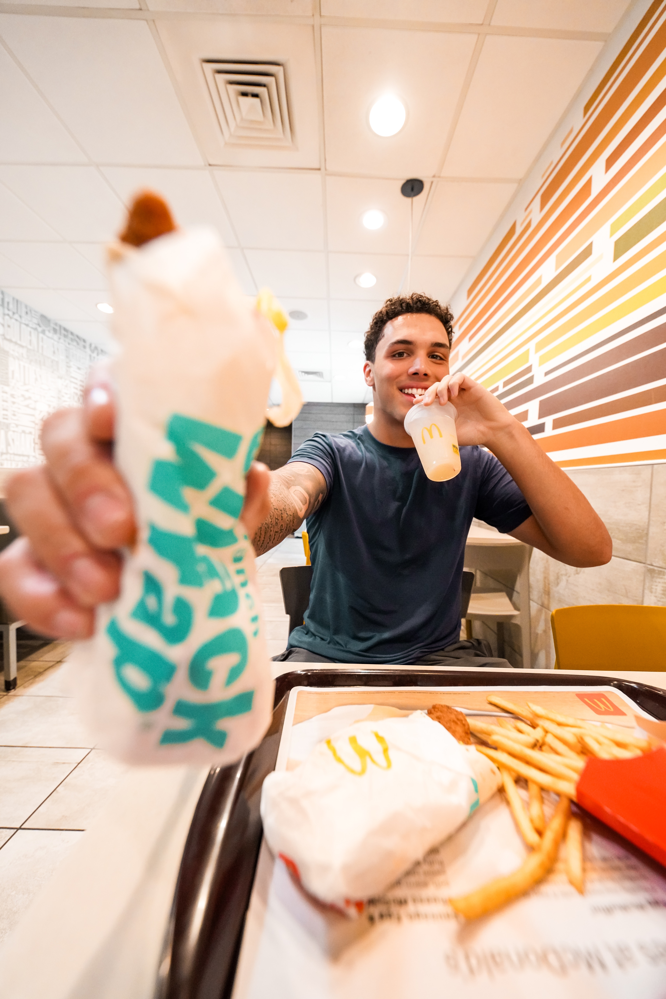

Shoot Brief
Shoot Brief
Shoot Brief
Shoot Brief
Seven drinks revealed one at a time in random order. After each taste the athlete locks it into a slot from 1 to 7 — before seeing the next. No takebacks.
A 9:16 crop keeps the full height of the horizontal frame and only about a third of its width. The vertical video's resolution comes entirely from how tall your horizontal frame is.
4K 16:9 is the minimum, not a preference. Shooting 1080p horizontal gives a vertical cut we'd have to upscale.
| Capture | Horizontal 16:9, 4K minimum (3840×2160+) |
|---|---|
| Frame rate | 24 or 30fps — pick one, stay on it |
| Vertical out | 1080×1920, centre crop in post |
| Horizontal out | 1920×1080 or better |
| Delivery | Original files off the card. No AirDrop, no texting — that compression is why the first demos came in at 720p. |
| Audio | Lav mic or a quiet corner. Room tone under every line makes lines unusable. |
| Priority | Deliverable | Length |
|---|---|---|
| 1 | Final vertical video — 9:16 social. Most important; this is what the brand needs. | :30 / :60 / flexible |
| 2 | Final horizontal video — 16:9 YouTube / long-form. Typically needed by Postgame. | Flexible |
Both come from the same horizontal footage. That's the point of shooting wide.
| 25–30 | Total edited photos |
|---|---|
| 10–20 | Individual portraits, per athlete |
| 10–20 | Group / duo shots |
Balanced mix of posed and candid energy. Stills are a separate pass — not video frame grabs.
Force real commitment on camera. The athlete ranks blind, one drink at a time, with no takebacks — the shrinking board creates the tension and the regret creates the content.
No Postgame demo exists for this concept yet. The format reference below shows the mechanic, but briefs 01 and 02 have cuts we shot ourselves and this one does not. Either shoot a Postgame demo first, or expect the first athlete cut to need more direction on set.
What good looks like — the format, the finish, and the photography. Real location, real product in hand, natural light, athlete relaxed rather than posed stiff.


The blind ranking runs as an in-browser camera filter we built for this campaign. The drink card floats over the athlete and the 1–7 rail fills as they lock each pick, live in frame. No TikTok account, no app install, any phone.
postgame-hub.vercel.app/quiz/mcd-blind-rank-cam
Overlays are live in the frame, so the finished look is baked in as you shoot. The page shuffles the reveal order itself and shows it on screen — nothing to write down.
Capture at the highest quality the phone offers. What you record here is the ceiling for every deliverable off this shoot.
This concept is the one exception to the horizontal rule at the top of this brief. The filter is the phone’s own camera, so it films vertical. That is expected here — the 16:9 deliverable is built in post using the treatment below, not captured wide.
Centre the vertical frame on a 16:9 canvas and fill the side pillars with a blurred, scaled-up copy of the same footage, so the edit reads as intentional rather than as a phone clip dropped into a wide box.
| Side fill | Duplicate the vertical, scale to cover the full 16:9 canvas, heavy Gaussian blur. Same footage — never a still, never a mirrored copy. |
|---|---|
| Blur amount | Enough that no edge or detail is legible. If a viewer can tell what is happening in the pillars, it is not blurred enough. |
| Pillars | Darken 15–25% so the eye stays centre. No visible seam or border between pillar and main frame. |
| Graphics | Stay inside the centre vertical column. Nothing lands in the blurred pillars. |
The blur adds width, not resolution — which is why the capture quality above matters.
The 7 drinks: Orange Dream (Hi-C) · Strawberry Watermelon · Sprite Berry Blast · Dirty Dr. Pepper · Blackberry Passion Fruit · Red Bull Dragonberry Energizer · Mango Pineapple
Rank the first drink #1 and you've spent your best slot on a coin flip. Play it safe in the middle and you'll have nowhere to put the one you love.
| 02 · Blind tasting | 03 · Blind ranking | |
|---|---|---|
| The question | "What drink is this?" | "Where does this rank?" |
| Eyes | Blindfolded | Open — they see each drink |
| Payoff | Score out of 7 | The finished 1–7 board |
No blindfold here. They need to see what they're ranking. The blindness is about what's coming next.
Athlete explains it: seven drinks, one at a time, lock each into a slot before the next, no changing your mind.
| Beat | What happens | Note |
|---|---|---|
| Reveal | Next drink placed in frame | Hold a beat — post adds a name card |
| Taste | Athlete sips | |
| Deliberate | Thinks out loud | This is the content. Push for it. |
| Lock | Calls a slot number out loud | "That's my number four." |
All seven cups arranged 1–7 in frame. Athlete walks the board, defends or regrets it, then the required lines. Don't skip this — it's the edit's payoff.
Exact wording. Both spoken on camera, and both appear as on-screen text in post. Get a clean take of each.
"Order using the McDonald's App or in-store digital kiosk"
"Download the McDonald's App for deals, rewards, and local offers."
FTC. #ad and #McDonaldsPartner stay on screen for the full cut. Athlete also discloses the partnership verbally near the top.
Red Bull Dragonberry Energizer — no straws. This drink has a sip lid and is not meant to be used with a straw. No straw appears in any content featuring it — not in the cup, not on the table, not anywhere in frame.